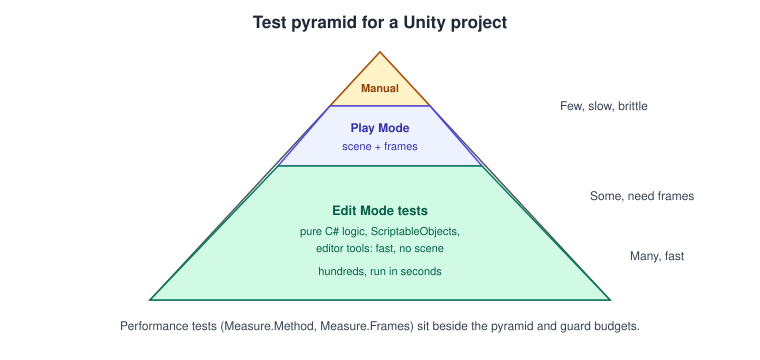
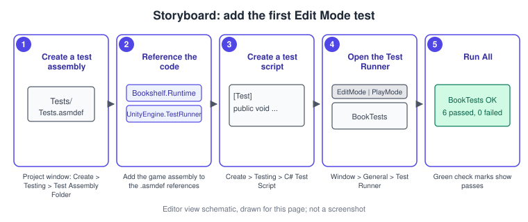
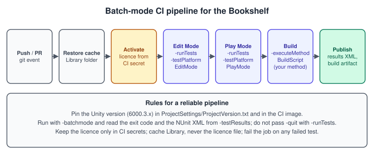

Testing and CI
|
This content was generated with the assistance of AI and should be verified against the official documentation before being relied on in production. |
Games are hard to test by hand: every change can break a physics interaction, a save file or a frame-rate budget that nobody will notice until a player does. Unity includes a Test Framework that runs automated tests inside the Editor and in built players, and the same tests can run unattended from a command line, which is what makes continuous integration (CI) possible. This page builds a small test suite for the Bookshelf project, from a pure scoring class up to a Play Mode test of the falling-book pool and a performance guard, and then runs the suite in batch mode.
The facts were checked in November 2026. The page documents Unity 6.3 LTS (6000.3) and the Unity Test Framework as described in the Unity 6.3 manual (the user guide for the framework moved into the manual from Unity 6.2; the package itself keeps its scripting API reference). Tests run on every Editor platform and, for Play Mode, in players built for the platforms that Unity can build a player for. Neither Unity in Action nor Game Development Patterns with Unity 2021 covers the Test Framework, so everything here comes from the manual and the package documentation. The C# side of unit testing in general (xUnit, NUnit and MSTest, fixtures and assertions) is in C# Testing; this page is about what Unity adds.
The Test Framework in one picture
The framework integrates a customized NUnit (the NUnit 3 family) and adds Unity-specific pieces: tests that can wait for frames, a window to run them, and a command line. A test is a method with an NUnit attribute in a class in a test assembly. There are two kinds, chosen by where the test runs:
-
Edit Mode tests run in the Editor without entering Play mode. They are fast, they can call Editor APIs, and they suit pure C# logic, ScriptableObjects, editor tools and asset validation.
-
Play Mode tests run as if the game were running: scenes load,
AwakeandStartrun, frames pass, physics and coroutines work. They suit MonoBehaviours, physics interactions, scene setup and anything that needs a frame loop. They can also run inside a built player on a device.

Write most tests as Edit Mode tests, and make that possible by keeping game logic in plain C# classes that do not
depend on MonoBehaviour (see
Project Architecture and Design Patterns for the
patterns that separate logic from presentation). A scoring rule that is a static method can be tested in microseconds;
the same rule buried in Update needs a scene.
Setting up a test assembly
Test code must live in a test assembly: an assembly definition (.asmdef) that references the Unity test runner
assemblies and NUnit and is only compiled for tests. Without one the Test Runner finds nothing. The assembly under
test must also be an assembly definition (the default Assembly-CSharp cannot be referenced from a named test
assembly), so the Bookshelf’s gameplay code gets its own Bookshelf.Runtime assembly.
-
In the Project window, select the folder that holds the gameplay scripts (for example
Assets/Scripts) and choose Create > Scripting > Assembly Definition. Name itBookshelf.Runtime. -
Select the
Assetsfolder (or aTestsfolder) and choose Create > Testing > Test Assembly Folder. Unity creates a folder with an assembly definition already configured for tests. Create one for Edit Mode (Bookshelf.Tests.EditMode) and one for Play Mode (Bookshelf.Tests.PlayMode). -
Select each test assembly definition and, in the Inspector, add
Bookshelf.Runtimeto Assembly Definition References. The Edit Mode assembly’s platform list contains only Editor; the Play Mode assembly’s includes all platforms. -
Create a test script in each folder with Create > Testing > C# Test Script.
-
Open Window > General > Test Runner, pick the EditMode or PlayMode tab and press Run All.

The assembly definition file that the first step produces is JSON; for reference, an Edit Mode test assembly looks like this (the Test Assembly Folder command writes an equivalent file for you):
{
"name": "Bookshelf.Tests.EditMode",
"rootNamespace": "Bookshelf.Tests",
"references": [
"UnityEngine.TestRunner",
"UnityEditor.TestRunner",
"Bookshelf.Runtime"
],
"includePlatforms": [
"Editor"
],
"excludePlatforms": [],
"allowUnsafeCode": false,
"overrideReferences": true,
"precompiledReferences": [
"nunit.framework.dll"
],
"autoReferenced": false,
"defineConstraints": [
"UNITY_INCLUDE_TESTS"
],
"versionDefines": [],
"noEngineReferences": false
}Edit Mode tests
The first code under test is the Bookshelf’s scoring rule, written as plain C# with no Unity types:
namespace Bookshelf.Gameplay
{
/// <summary>Pure scoring rules for "Shelve-it"; no MonoBehaviour, so it is trivial to test.</summary>
public static class ScoreRules
{
public const int ShelvedPoints = 10;
public const int MissedPenalty = 5;
public const int StreakBonusEvery = 3;
/// <summary>Score change for one shelved book, with a bonus every third book in a row.</summary>
public static int ForShelved(int streakBefore)
{
int streak = streakBefore + 1;
int bonus = streak % StreakBonusEvery == 0 ? ShelvedPoints : 0;
return ShelvedPoints + bonus;
}
/// <summary>Score change for a book that hit the floor; the score never goes below zero.</summary>
public static int ApplyMiss(int currentScore)
{
int next = currentScore - MissedPenalty;
return next < 0 ? 0 : next;
}
}
}The tests use NUnit’s [Test], [TestCase] for data-driven checks, and constraint-model assertions:
using Bookshelf.Gameplay;
using NUnit.Framework;
namespace Bookshelf.Tests
{
public sealed class ScoreRulesTests
{
[Test]
public void ForShelved_FirstBook_GivesBasePoints()
{
Assert.That(ScoreRules.ForShelved(0), Is.EqualTo(ScoreRules.ShelvedPoints));
}
[TestCase(0, 10)]
[TestCase(1, 10)]
[TestCase(2, 20)] // the third book in a row earns the bonus
[TestCase(3, 10)]
[TestCase(5, 20)]
public void ForShelved_FollowsStreakBonus(int streakBefore, int expected)
{
Assert.That(ScoreRules.ForShelved(streakBefore), Is.EqualTo(expected));
}
[TestCase(20, 15)]
[TestCase(5, 0)]
[TestCase(0, 0)]
public void ApplyMiss_NeverGoesBelowZero(int score, int expected)
{
Assert.That(ScoreRules.ApplyMiss(score), Is.EqualTo(expected));
}
}
}The second kind of Edit Mode test checks data. A BookData ScriptableObject (see
ScriptableObjects and Data-Driven Design) can be
created in memory with ScriptableObject.CreateInstance, and a test that loads every BookData asset in the project
catches an empty title or a missing cover before a player does:
using System.Collections.Generic;
using System.Linq;
using Bookshelf.Data;
using NUnit.Framework;
using UnityEditor;
using UnityEngine;
namespace Bookshelf.Tests
{
public sealed class BookDataTests
{
private readonly List<Object> created = new List<Object>();
[TearDown]
public void TearDown()
{
foreach (Object o in created)
{
Object.DestroyImmediate(o); // Edit Mode: Destroy is not allowed, DestroyImmediate is
}
created.Clear();
}
[Test]
public void NewBookData_HasPositivePageCount()
{
BookData data = ScriptableObject.CreateInstance<BookData>();
created.Add(data);
Assert.That(data.Pages, Is.GreaterThan(0));
}
[Test]
public void EveryBookDataAsset_HasTitleAndCover()
{
string[] guids = AssetDatabase.FindAssets("t:BookData");
Assert.That(guids, Is.Not.Empty, "The project should contain at least one BookData asset");
List<string> problems = new List<string>();
foreach (string guid in guids)
{
string path = AssetDatabase.GUIDToAssetPath(guid);
BookData data = AssetDatabase.LoadAssetAtPath<BookData>(path);
if (string.IsNullOrWhiteSpace(data.Title))
{
problems.Add(path + ": empty title");
}
if (data.Cover == null)
{
problems.Add(path + ": missing cover");
}
}
Assert.That(problems, Is.Empty, string.Join("\n", problems.ToArray()));
}
}
}Edit Mode tests have two rules of their own. First, Object.Destroy is not allowed outside Play mode; use
Object.DestroyImmediate, and clean up whatever you create so one test cannot affect the next. Second, a test that
calls Unity’s Debug.LogError fails by default, so a test that expects an error must say so with
LogAssert.Expect(LogType.Error, "message"), and LogAssert.ignoreFailingMessages turns the check off for a
noisy third-party call.
Play Mode tests and UnityTest
A Play Mode test has a frame loop. The [UnityTest] attribute marks a test that returns IEnumerator and runs as a
coroutine: yield return null skips one frame, yield return new WaitForSeconds(t) waits, and WaitForFixedUpdate
waits for the physics step. [UnitySetUp] and [UnityTearDown] are the coroutine versions of [SetUp] and
[TearDown] and can also yield. Edit Mode supports [UnityTest] too, with EditorApplication.update as the
loop.
Source: Unity manual: Testing your code
The following test drives the pooled book dropper of Profiling and Optimization in a real scene: it builds a dropper from code, lets it run for a second and asserts that the pool never creates more books than its limit and that books fall.
using System.Collections;
using Bookshelf.Gameplay;
using NUnit.Framework;
using UnityEngine;
using UnityEngine.TestTools;
namespace Bookshelf.Tests
{
public sealed class BookDropperPlayModeTests
{
private GameObject root;
[UnitySetUp]
public IEnumerator SetUp()
{
root = new GameObject("DropperRoot");
// A minimal book: a rigidbody, a collider, and the pooled-book component.
GameObject bookObject = GameObject.CreatePrimitive(PrimitiveType.Cube);
bookObject.name = "BookTemplate";
bookObject.transform.localScale = new Vector3(0.2f, 0.3f, 0.05f);
bookObject.AddComponent<Rigidbody>();
PooledBook bookPrefab = bookObject.AddComponent<PooledBook>();
bookObject.SetActive(false); // an inactive template that the pool instantiates from
// Create the dropper disabled so its serialized fields can be set before Awake runs.
GameObject dropperObject = new GameObject("Dropper");
dropperObject.SetActive(false);
dropperObject.transform.SetParent(root.transform);
BookDropper dropper = dropperObject.AddComponent<BookDropper>();
SetPrivateField(dropper, "bookPrefab", bookPrefab);
SetPrivateField(dropper, "interval", 0.05f);
SetPrivateField(dropper, "maxSize", 10);
dropperObject.SetActive(true);
yield return null;
}
[TearDown]
public void TearDown()
{
Object.Destroy(root);
}
[UnityTest]
public IEnumerator Dropper_SpawnsFallingBooks_WithinPoolLimit()
{
yield return new WaitForSeconds(1f);
Rigidbody[] bodies = root.GetComponentsInChildren<Rigidbody>(false);
Assert.That(bodies.Length, Is.GreaterThan(0), "Some books should be active after one second");
Assert.That(bodies.Length, Is.LessThanOrEqualTo(25));
bool anyMoving = false;
foreach (Rigidbody body in bodies)
{
if (body.linearVelocity.sqrMagnitude > 0.01f)
{
anyMoving = true;
break;
}
}
Assert.That(anyMoving, "At least one active book should be falling");
}
private static void SetPrivateField(object target, string name, object value)
{
var field = target.GetType().GetField(
name, System.Reflection.BindingFlags.Instance | System.Reflection.BindingFlags.NonPublic);
Assert.That(field, Is.Not.Null, "Field " + name + " not found on " + target.GetType().Name);
field.SetValue(target, value);
}
}
}Reaching into private serialized fields by reflection is a smell: a production design that exposes an Init
method, or a small interface, tests more cleanly. It is used here to keep the example short. A scene-based test can
instead load a real scene with SceneManager.LoadSceneAsync inside a [UnitySetUp] and yield return the operation;
the scene must be in the build profile’s scene list for Play Mode tests that run in a player.
Async tests
A test can also be an async Task method with the plain [Test] attribute. Unity runs the async code on the main
thread and checks the task on every update, in Play Mode and in Edit Mode, so Unity APIs are safe to call after an
await. Two caveats are in the manual. Messages logged during an async test are evaluated only when the test
completes. And NUnit’s Assert.ThrowsAsync blocks the calling thread until the awaited work finishes, which freezes
the Editor because the work needs the main thread; catch the exception in a try block, set a flag and assert on the
flag instead.
using System.Threading.Tasks;
using NUnit.Framework;
namespace Bookshelf.Tests
{
public sealed class AsyncSaveTests
{
[Test]
public async Task SaveThenLoad_RoundTripsTheScore()
{
// A stand-in for a save service; the real one is in the saving and loading page.
int saved = 0;
await Task.Run(() => saved = 120);
await Task.Yield(); // resume on the main thread, one update later
Assert.That(saved, Is.EqualTo(120));
}
[Test]
public async Task Failure_IsObservedWithoutThrowsAsync()
{
bool caught = false;
try
{
await Task.Delay(10);
throw new System.InvalidOperationException("save slot is full");
}
catch (System.InvalidOperationException)
{
caught = true;
}
Assert.That(caught);
}
}
}The save and load code those tests stand in for is in Saving, Loading and HTTP Networking.
Static state and domain reload
Tests that touch static fields (singletons, counters, event buses) can leak state from one test to the next. Unity 6.6
makes "Reload Scene only" the default Enter Play Mode option for new projects, which means the scripting domain is not
reloaded between Play sessions and statics keep their values, so every static that a test or a system sets must be
reset, either in a [SetUp] method or in a method marked with RuntimeInitializeOnLoadMethod. The same rule holds
for projects that already disabled domain reload in Unity 6.3.
Performance tests
The Performance Testing package (com.unity.test-framework.performance) adds an API for recording timings, frame
times, Profiler markers and custom metrics inside tests, and attaches the configuration that produced them (Unity
version, platform, scripting backend). A test uses [Test, Performance] or [UnityTest, Performance], and the test
assembly must reference Unity.PerformanceTesting. Performance tests always build a development player. The package
page recommends one Quality level and VSync off, so that results do not vary by platform.
using System.Collections;
using Bookshelf.Gameplay;
using NUnit.Framework;
using Unity.PerformanceTesting;
using UnityEngine;
using UnityEngine.TestTools;
namespace Bookshelf.Tests
{
public sealed class BookshelfPerformanceTests
{
[Test, Performance]
public void ScoreRules_ForShelved_Cost()
{
Measure.Method(() =>
{
int total = 0;
for (int streak = 0; streak < 1000; streak++)
{
total += ScoreRules.ForShelved(streak);
}
})
.WarmupCount(5)
.IterationsPerMeasurement(100)
.MeasurementCount(20)
.Run();
}
[UnityTest, Performance]
public IEnumerator EmptyScene_FrameTime()
{
yield return Measure.Frames()
.WarmupCount(10)
.MeasurementCount(60)
.Run();
}
}
}A single run measures nothing: the value of a performance test is the comparison with a baseline from an earlier build. Store the results of a known good build, and fail or warn when the median of a metric regresses beyond a tolerance; the Profile Analyzer of Profiling and Optimization is the interactive way to look at the same data.
Code coverage
The Code Coverage package (com.unity.testtools.codecoverage) instruments the code that tests execute and reports
which lines and methods ran. It has a window in the Editor (Window > Analysis > Code Coverage) and works in batch
mode, where it can write an HTML report and SonarQube, Cobertura or LCOV files for a CI service. Coverage numbers say
what the tests executed, not whether they check anything; use them to find untested code, not as a goal.
Source: Code Coverage package: Overview
Running tests from the command line
The Editor runs the same tests without a window. The arguments of the Test Framework, combined with the Editor’s own
(-batchmode, -projectPath), make a CI step:
| Argument | Meaning |
|---|---|
|
Run the project’s tests. The Editor’s |
|
|
|
Path of the NUnit-format XML result file. Defaults to the project root. |
|
Semicolon-separated test names, or a regular expression; |
|
Semicolon-separated categories (set with NUnit’s |
|
Semicolon-separated list of test assemblies to run. |
|
Edit Mode only: run everything in one Editor update; |
|
Seconds to wait for a player to report in; the default is 600 (ten minutes). |
|
Randomize order with a seed; repeat successful tests; retry failing tests. |
|
A JSON file of build settings for the player that Play Mode tests use (scripting backend, API profile, graphics API, Android and iOS signing options). |
The manual documents no exit codes specific to the Test Framework, so a CI script should read the XML file that
-testResults writes (it is NUnit’s result format) in addition to checking the process status, and fail the job when
the result file reports failures or is missing.
#!/usr/bin/env bash
# run-tests.sh: run Edit Mode and Play Mode tests in batch mode and fail if anything fails.
set -euo pipefail
UNITY="${UNITY_PATH:?Set UNITY_PATH to the Unity 6000.3 editor executable}"
PROJECT="$(cd "$(dirname "$0")/.." && pwd)"
RESULTS="${PROJECT}/TestResults"
mkdir -p "${RESULTS}"
run_suite() {
local platform="$1"
"${UNITY}" -batchmode -nographics \
-projectPath "${PROJECT}" \
-runTests -testPlatform "${platform}" \
-testResults "${RESULTS}/${platform}.xml" \
-logFile "${RESULTS}/${platform}.log" \
-enableCodeCoverage \
-coverageResultsPath "${RESULTS}/coverage-${platform}" \
-coverageOptions "generateAdditionalReports;assemblyFilters:+Bookshelf.Runtime" \
|| true # judge the result file below, not the process status alone
if [ ! -f "${RESULTS}/${platform}.xml" ]; then
echo "No result file for ${platform}: the editor did not finish the run" >&2
exit 2
fi
# NUnit 3 result files carry result="Failed" on the root test-run element when any test fails.
if grep -q '<test-run[^>]*result="Failed' "${RESULTS}/${platform}.xml"; then
echo "${platform} tests FAILED" >&2
exit 1
fi
echo "${platform} tests passed"
}
run_suite EditMode
run_suite PlayModeSource: Code Coverage package: Batchmode
A few notes on that script. -nographics runs without a GPU context, which is fine for logic tests but wrong for a
test that renders, so drop it for those. The licence must be active on the machine that runs Unity: activate it with
the command-line licensing arguments documented for your plan and keep the credentials in the CI system’s secret store,
never in the repository or in the script. And always keep the Unity version identical to the one in
ProjectSettings/ProjectVersion.txt, because opening a project with a different Editor version can trigger an upgrade of the project.
A build script for CI
-executeMethod runs a static method of an Editor class after the project loads. A build script uses it to produce a
player with BuildPipeline.BuildPlayer, and the exit code tells the CI job whether the build worked:
using System;
using System.Linq;
using UnityEditor;
using UnityEditor.Build.Reporting;
using UnityEngine;
namespace Bookshelf.Editor
{
/// <summary>Command-line build entry point: -executeMethod Bookshelf.Editor.BuildScript.BuildWindows</summary>
public static class BuildScript
{
public static void BuildWindows()
{
string output = GetArg("-buildOutput") ?? "Builds/Windows/Bookshelf.exe";
BuildPlayerOptions options = new BuildPlayerOptions
{
scenes = EditorBuildSettings.scenes.Where(s => s.enabled).Select(s => s.path).ToArray(),
locationPathName = output,
target = BuildTarget.StandaloneWindows64,
options = BuildOptions.None
};
BuildReport report = BuildPipeline.BuildPlayer(options);
BuildSummary summary = report.summary;
if (summary.result == BuildResult.Succeeded)
{
Debug.Log("Build succeeded: " + summary.totalSize + " bytes in " + summary.totalTime);
EditorApplication.Exit(0);
}
else
{
Debug.LogError("Build failed: " + summary.result + ", errors: " + summary.totalErrors);
EditorApplication.Exit(1);
}
}
private static string GetArg(string name)
{
string[] args = Environment.GetCommandLineArgs();
for (int i = 0; i < args.Length - 1; i++)
{
if (args[i] == name)
{
return args[i + 1];
}
}
return null;
}
}
}Unity 6 builds are configured with Build Profiles; a script can build the active profile or a specific one. See Build Profiles and Platforms for profiles and their scripting entry points.
The pipeline
A job that mirrors a developer’s checklist: restore a cache of the Library folder (the largest time saver),
activate the licence, run the Edit Mode suite, run the Play Mode suite, build, publish the results and the build.

A workflow for a self-hosted runner that has Unity installed (the runner image, not the repository, holds the editor and the licence) looks like this; the same steps translate to any CI service:
name: unity-tests
on:
push:
branches: [ main ]
pull_request:
jobs:
test:
runs-on: [ self-hosted, unity-6000-3 ]
timeout-minutes: 60
env:
UNITY_PATH: /opt/unity/6000.3/Editor/Unity
steps:
- uses: actions/checkout@v4
with:
lfs: true
- name: Restore the Library cache
uses: actions/cache@v4
with:
path: Library
key: Library-${{ hashFiles('Assets/**', 'Packages/**', 'ProjectSettings/**') }}
restore-keys: Library-
- name: Run tests
run: ./ci/run-tests.sh
- name: Build
run: |
"$UNITY_PATH" -batchmode -nographics -quit \
-projectPath "$PWD" \
-executeMethod Bookshelf.Editor.BuildScript.BuildWindows \
-buildOutput Builds/Windows/Bookshelf.exe \
-logFile Builds/build.log
- name: Upload results
if: always()
uses: actions/upload-artifact@v4
with:
name: unity-results
path: |
TestResults/
Builds/build.logCommon mistakes
-
Test code that cannot find the game code. The game scripts are in the default
Assembly-CSharp, which a named assembly cannot reference. Move them into an assembly definition and add it to the test assembly’s references. -
Forgetting that tests need the test assembly attributes. An
.asmdefwithoutUnityEngine.TestRunner,UnityEditor.TestRunner,nunit.framework.dll(with Override References) and theUNITY_INCLUDE_TESTSdefine constraint compiles but shows no tests. -
Object.Destroyin an Edit Mode test. It logs an error; useObject.DestroyImmediate. -
Unexpected
Debug.LogErrorfails the test. Expect it withLogAssert.Expect, or fix the cause. -
[UnityTest]on a method that does not returnIEnumerator. The test is silently not run as a coroutine; use the signaturepublic IEnumerator Name(). -
Relying on test order or on state left by another test. Tests may run in any order; create everything a test needs in
[SetUp]and destroy it in[TearDown]. -
Using
-quitwith-runTests. The manual says it is not supported; let the run end by itself. -
Judging a CI run only by the process exit code. Read the result XML and fail on a missing file as well as on failures.
-
Running Play Mode tests on a different version of Unity than the project. Pin the version in the CI image.
-
Committing licence files or credentials. Keep them in the CI secret store.
-
Treating coverage as the aim. A test with no assertion raises coverage and checks nothing.
Performance notes
-
Edit Mode tests start fast and stay fast: keep scene loading out of them, and prefer them for anything that does not need a frame.
-
Entering Play mode for Play Mode tests takes seconds; group related checks in one test class that shares a scene setup instead of loading the scene for every method.
-
The
Libraryfolder is the main CI cache; without it the first import of a large project takes minutes or hours. -
Run the fast suite on every push and the slow suite (device Play Mode tests, performance tests) on a schedule or before a release.
-
Performance tests are noisy on shared hardware: use a dedicated runner, warm up, take enough measurements and compare medians.
-
Run a Play Mode suite on a real device by choosing the build target as
-testPlatformand pointing-testSettingsFileat the signing and backend options;-playerHeartbeatTimeoutextends the wait for slow devices.
What changed recently
| Version | Change relevant to this page |
|---|---|
Unity 6.2 |
The Test Framework user guide appears in the Unity manual (under the programming environment section); the package page keeps the scripting API. |
Unity 6.3 LTS |
The documented version. The manual covers asynchronous tests, parameterized tests, the command-line reference and test settings files. |
Unity 6.4 |
The Compatibility Mode of URP is removed, so rendering tests target the Render Graph path only. |
Unity 6.6 |
New projects default to "Reload Scene only" when entering Play mode: reset statics in tests and systems. A Build Analysis window helps check what a build contains. |
Where the books are outdated
Unity in Action (UIA) and Game Development Patterns with Unity 2021 (GDP) do not cover the Test Framework, Performance Testing, code coverage or batch-mode builds, so there is no dated advice to correct here; the manual and package pages cited on this page are the reference. Any book example that depends on static singletons should be re-read with the reset-statics rule above in mind.
References
-
Unity manual, Testing your code: https://docs.unity.com/en-us/engine/6000.3/manual/programming-environment/test-framework-introduction
-
Unity manual, Test Framework command-line reference: https://docs.unity.com/en-us/engine/6000.3/manual/programming-environment/test-framework-introduction/reference-command-line
-
Unity manual, Editor command-line arguments: https://docs.unity.com/en-us/engine/6000.3/manual/unity-editor/command-line-arguments/editor
-
Performance Testing package: https://docs.unity3d.com/Packages/com.unity.test-framework.performance@3.1/manual/index.html
-
Code Coverage package: https://docs.unity3d.com/Packages/com.unity.testtools.codecoverage@1.3/manual/index.html
-
Unity Scripting API, BuildPipeline.BuildPlayer: https://docs.unity.com/en-us/engine/6000.3/script-reference/unityeditor/buildpipeline/buildplayer
-
NUnit documentation: https://docs.nunit.org
-
Unity Learn: https://learn.unity.com